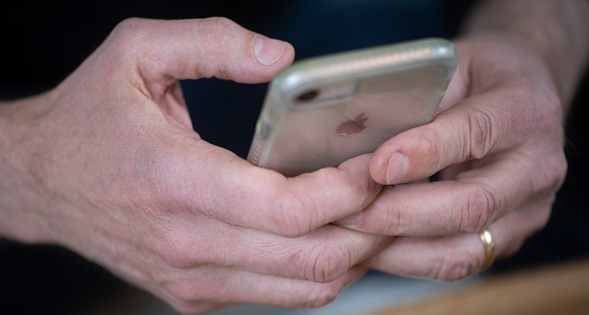

 Det blir allt vanligare med brottslingar som ringer och försöker luras i mobilen. I år har anmälningarna om sådana brott ökat mycket. Nu varnar poliserna för det. Personer kan till exempel ringa till dig och låtsas vara polis eller jobba med sjukvård. De kan också låtsas jobba på bank eller med försäkringar. De som ringer vill ofta hälsa på hemma hos dig. De kan säga att de vill att du ska lämna dina bankkort till dem. Eller så vill de ha personlig information från dig. Till exempel att du ska starta ditt bank-id på mobilen. Då kan de logga in på banken och stjäla dina pengar. Ofta säger de som ringer att de vill hjälpa till att stoppa ett brott mot dig. Till exempel att någon har tagit ett lån i ditt namn. De kan också säga att en hemsk olycka har hänt någon i din familj. De vill att du ska starta ditt bank-id för att tydligt visa vem du är. Men det ska du aldrig göra. Berätta aldrig för någon vad som står på ditt bankkort. Använd aldrig dosan till din bank eller bank-id om någon ringer till dig. Avsluta samtalet direkt. Det säger Towe Hägg som jobbar med poliserna. – Många är uppfostrade med att tänka bra saker om andra. Men det är inte fel att bara lägga på luren, säger Towe Hägg. Hon vill att fler människor ska få veta att vi kan bli lurade på de här sätten. Det är särskilt viktigt att gamla människor får veta det. Familj, vänner och grannar kan hjälpa till med att berätta för gamla människor. – De som ringer är trevliga. De har tränat på att lura dig, säger Towe Hägg.